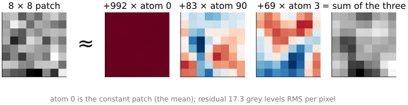
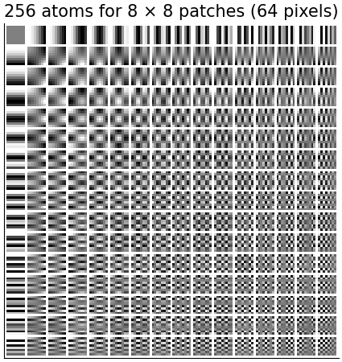
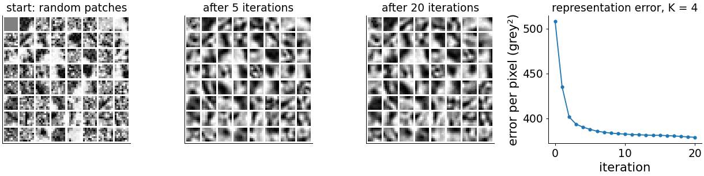
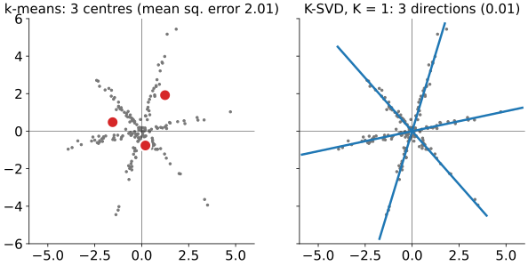
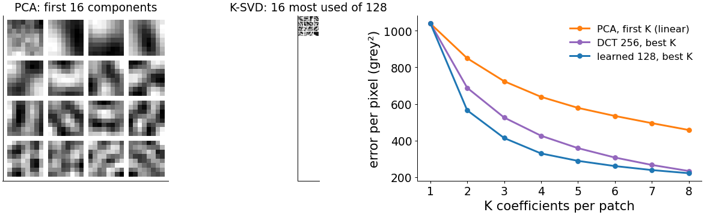
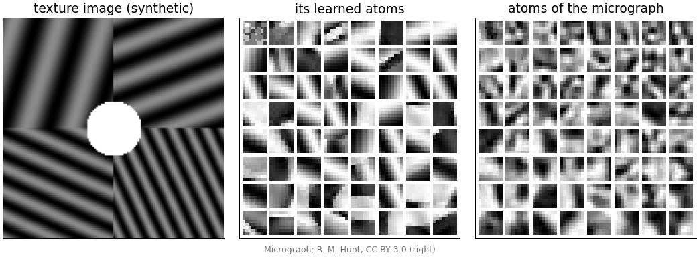
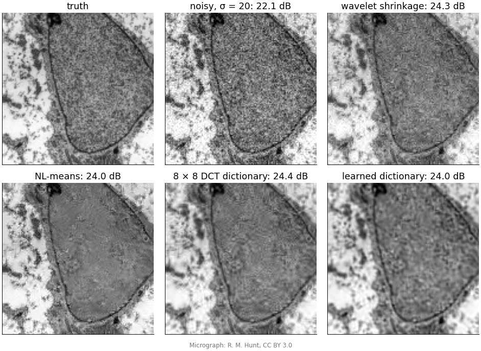
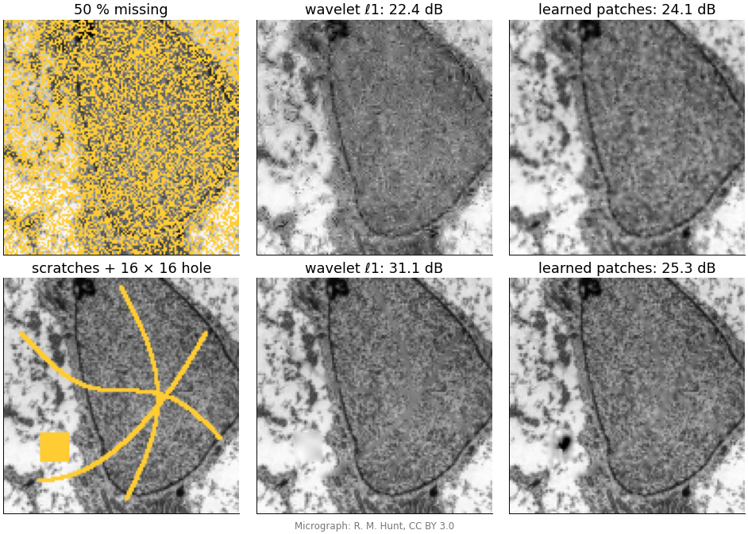

So far the sparsifying basis was chosen by hand: spikes, DCT, wavelets. Today we learn it from the images themselves, on small patches.
Patches as vectors; a dictionary of atoms; sparse coding = writing each patch as a few atoms.
Dictionary learning: alternate sparse coding and atom updates (K-SVD, MOD); k-means is the one-atom special case; PCA is the orthogonal, non-sparse cousin.
What learned atoms look like.
Denoising and inpainting with overlapping patches, compared with wavelets and non-local means.
Costs and limits, and a summary of the day.
Slides titled The math give the formulas and proofs; the ideas are complete without them.
Patches as vectors

An 8 × 8 patch is a point in 64 dimensions (recall PCA: “two pixels, one point”).
A dictionary is a set of atoms, 64-vectors (here 128 of them, learned from the image).
Sparse coding: write each patch as a combination of a few atoms. Here 3 atoms leave 17 grey levels RMS per pixel: the fine texture and noise.
Fixed dictionaries
The 64 DCT basis images of JPEG: a basis, every patch is a unique combination.
An overcomplete DCT: 256 cosine patterns (more frequencies than pixels allow). Many ways to write the same patch: choose the sparsest.
Wavelets on patches, or the union of several bases.
These are good starting points and know nothing about the particular images.

Overcomplete = more atoms than pixels
With more atoms than dimensions (256 for 64), each patch has infinitely many representations; the sparse one is chosen. More choice means sparser codes and a better fit with few atoms.
Coding is no longer a change of basis (a matrix product) but a small ℓ1 or OMP problem per patch, exactly the problems of the solvers unit. For many patches we use OMP with the error target or a maximum number K of atoms.
One image of 256 × 256 has 62 001 overlapping 8 × 8 patches: a lot of small problems. Batch-OMP shares the work (the atom inner products are precomputed once).
Learn the atoms from the image itself
Alternate two steps on thousands of training patches:
Sparse coding: OMP for every patch with the current atoms (K atoms each).
Atom update: change each atom (and the coefficients that use it) to fit the patches that use it better.
Start from random patches (left). After 5 iterations edges and bars appear; after 20 the atoms change little and the error has dropped from 508 to 379 grey levels² per pixel.

k-means is the one-atom special case
k-means (recall k-means if you took it): each point belongs to its nearest centre, then each centre moves to the mean of its points. Repeat.
As dictionary learning: each patch uses exactly one atom with coefficient 1. Assignment = coding, mean = atom update.
K-SVD generalises it: a few atoms, any coefficients. Even with one atom per point it learns directions, not points: a patch and its brighter or inverted copy use the same atom.
Right: points along three directions through 0. k-means needs its centres to sit at averages (error 2.0); one atom per direction fits all points (0.01).

The K-SVD atom update
For one atom: collect the patches that use it; subtract the contributions of their other atoms; what is left are residuals that this atom should explain.
The best single atom for those residuals, with free coefficients, is the best direction through them: the first principal direction, without centring (recall PCA). Its coefficients are the projections.
Update atoms one by one, each time with the fresh residuals.
MOD (method of optimal directions): update all atoms at once by least squares, given all the codes; then renormalise.
By hand: one atom update
Three 2-pixel residuals use the same atom: (2, 1), (4, 2), (−1, −1).
Eigenvalues 26.81 and 0.19; top eigenvector (0.884, 0.467): the new atom.
New coefficients = projections: (2, 1)\cdot\mathbf d = 2.24, (4, 2)\cdot\mathbf d = 4.47, (-1, -1)\cdot\mathbf d = -1.35.
Remaining error: the small eigenvalue, 0.19 (out of a total of 27).
The math: one problem, solved by alternation
Patches as columns of Y (64 \times n), atoms as columns of D (64 \times k, unit norm), codes as columns of C: \min_{D,\,C}\ \|Y - DC\|_F^2 \quad\text{subject to}\quad \|\mathbf c_i\|_0 \le K \text{ for every patch } i.
Not convex (a product DC, and ℓ0); solved by alternation: fix D, solve for C (sparse coding, separate per patch); fix the supports, improve D (and the values of C).
With exact sparse coding each step cannot increase the objective, so it converges to a local minimum; OMP is greedy, so in practice the error can tick up slightly after a coding step.
The result depends on the start (random patches, overcomplete DCT).
The math: the K-SVD update
Write DC = \sum_j \mathbf d_j\mathbf c^j (\mathbf c^j = row j of C, the coefficients of atom j). For atom k: \|Y - DC\|_F^2 = \Big\|\underbrace{Y - \sum_{j \ne k}\mathbf d_j\mathbf c^j}_{E_k} - \mathbf d_k\mathbf c^k\Big\|_F^2.
Keep only the columns (patches) that use atom k, so the sparsity pattern does not change: E_k^R, \mathbf c^k_R.
Minimising \|E_k^R - \mathbf d_k\mathbf c^k_R\|_F^2 over a unit \mathbf d_k and free \mathbf c^k_R is the best rank-1 approximation: the leading singular pair, \mathbf d_k = \mathbf u_1, \mathbf c^k_R = σ_1\mathbf v_1^\top (Eckart–Young; recall PCA: “the error is the sum of the dropped eigenvalues”).
MOD: given C, D = YC^\top(CC^\top)^{-1}, then normalise the columns.
The math: k-means as K = 1, coefficient 1
Restrict every code to one nonzero equal to 1: \mathbf c_i = \mathbf e_{a(i)}.
Coding: \min_j\|\mathbf y_i - \mathbf d_j\|^2: the nearest centre (assignment step).
Update: for fixed assignments, \sum_{i:\,a(i) = j}\|\mathbf y_i - \mathbf d_j\|^2 is minimised by the mean of those points (update step). The atoms are not normalised.
Allowing any coefficient (“gain–shape”): coding picks the atom with the largest |\mathbf d_j^\top\mathbf y_i|, and the update is the rank-1 SVD above: K-SVD with K = 1.
PCA or a learned dictionary?

PCA (= the KLT of compression): orthogonal atoms, all used by every patch, ordered by variance: the best linear approximation with the first K terms.
A learned dictionary: overcomplete, non-orthogonal, each patch picks its own few: better sparse (non-linear) approximation. At K = 4: 639 (PCA), 426 (DCT, best 4 of 256), 330 (learned, best 4 of 128).
What learned atoms look like

From the texture: stripes in its own four orientations and frequencies. The dictionary stores the image’s recurring patterns.
From the micrograph: oriented edges, bars and blobs at many positions.
Learned from natural images, such atoms look like Gabor functions, like the receptive fields of neurons in the primary visual cortex (Olshausen & Field 1996), and like the first-layer filters of a convolutional network.
Try it: learning a patch dictionary
Denoising with patches

K-SVD denoising (Elad & Aharon 2006):
Code every overlapping patch with OMP, stopping when the residual reaches the noise level: about 64\cdot(1.15σ)^2 for 8 × 8 patches.
Each pixel is covered by up to 64 patches: average their reconstructions, together with the noisy pixel itself.
On this textured micrograph (σ = 20) all methods land within 0.4 dB of each other, 24.0–24.4 dB from 22.1: the fine texture is as hard to keep as the noise is to remove. On images with repeated structure (cartoons, nuclei) the patch methods gain more.
The math: averaging overlapping patches
R_p extracts patch p from the image; D\mathbf c_p is its sparse reconstruction. The denoised image solves \min_{\mathbf x}\ λ\|\mathbf x - \mathbf y\|^2 + \sum_p\|R_p\mathbf x - D\mathbf c_p\|^2
\quad\Rightarrow\quad
\hat{\mathbf x} = \Big(λI + \sum_p R_p^\top R_p\Big)^{-1}\Big(λ\mathbf y + \sum_p R_p^\top D\mathbf c_p\Big).
R_p^\top R_p is diagonal (1 on the pixels of patch p), so \sum_p R_p^\top R_p is diagonal: the number of patches covering each pixel (64 inside, fewer at the border).
The inverse is therefore a per-pixel division: \hat x_q = \dfrac{λy_q + \sum_{p \ni q}(D\mathbf c_p)_q}{λ + \#\{p \ni q\}}, a weighted average.
Inpainting: the same with λ only on known pixels.
Why it works
Images repeat local structure: edges, textures, membranes, nuclei. The dictionary stores the recurring patterns; the sparse code picks among them.
Noise is not sparse in any atom: it costs many atoms, so the error-limited code leaves it out.
The same idea as non-local means (denoising): average similar patches. NL-means compares patches directly; a dictionary summarises them into atoms.
Averaging overlapping patches removes the block artefacts that coding non-overlapping blocks (as in JPEG) would leave.
Inpainting with patches

Code each patch using only its known pixels (mask the atoms the same way), then fill the unknown pixels from the code; average the overlaps.
50 % missing: patches 24.1 dB, wavelet ℓ1 22.4 dB: the learned atoms predict the texture better.
Scratches: both remove them.
A hole larger than a patch: filled from the border inwards. Here the patches invent a dark blob that is not there (25.3 dB), worse than the wavelet blur (31.1 dB). A learned prior can put plausible but wrong structure into what was not measured.
Try it: restoring with dictionaries
Deconvolution with a patch prior
ISTA alternates a gradient step on the data with a threshold. Replace the threshold by patch denoising: gradient step (Landweber) → denoise the patches → gradient step → …
This is “plug-and-play”: any good denoiser can stand in for the proximal step, even without a written-down penalty.
With a neural-network denoiser, or a diffusion model, this becomes the learned-prior restoration of the diffusion priors unit.
Costs and limits
Learning is slow: OMP on tens of thousands of patches per iteration (for one 256 × 256 image: 62 001 patches, about 10^9 operations per pass with 256 atoms).
Patch size limits what can be modelled: holes and structures larger than a patch are out of reach (the dark blob).
A dictionary learned on one kind of image may impose its patterns on another: a mild version of the hallucination warning of learned priors.
Texture without repetition is not sparse in any learned atoms either: it is smoothed away like noise.
The atoms are local; images also have long-range structure (shapes, symmetry) that patches do not see.
Summary of the day
penalty / prior
solver
what it buys
what it destroys
ℓ2 (Tikhonov)
linear, closed form
stable, simple
edges (blur, ringing); never sparse
ℓ1 in a fixed basis (wavelets, DCT)
soft threshold, ISTA/FISTA, OMP
exact zeros, sharp edges, recovery from few measurements (CS, MRI)
small low-contrast detail; contrast (bias); blocks or ringing of the basis
TV (ℓ1 of differences)
TV denoising inside ISTA
sharp edges, flat regions
texture; ramps become staircases
ℓ1 / ℓ0 in a learned dictionary
OMP per patch, K-SVD
adapts to the image’s own patterns; good denoising and inpainting
slow; patterns of the training images can be imposed where data are missing
Summary
A dictionary of atoms; sparse coding writes each patch as a few atoms (OMP); overcomplete dictionaries give sparser codes.
Dictionary learning alternates coding and atom updates. K-SVD: each atom = best rank-1 fit (SVD) to the residuals of its patches. MOD: all atoms by least squares. k-means = one atom with coefficient 1.
PCA is optimal for linear approximation with the first K components; a learned dictionary is better for sparse approximation with each patch’s own K.
Learned atoms: oriented edges, bars, blobs; stripes for a texture.
Denoising: code overlapping patches to the noise level and average. Inpainting: code with the known pixels only. Large holes get invented structure.
Across the day: sparsity is a hand-made prior; it lets us measure less and restore more, and it removes what is small and faint.